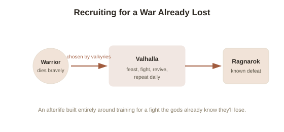

Chapter 2: Valhalla, Berserkers, and Preparing for a War Already Lost
Chapter 1 ended with a hook about berserkers — Norse warriors said to fight in an uncontrollable, trance-like fury — and the mystery around what actually caused that state. That mystery sits inside a bigger picture worth exploring on its own: Norse mythology didn't just describe gods and giants, it built an entire afterlife and warrior culture specifically oriented around Ragnarok, the ending Chapter 1 covered. Nothing about Norse warrior belief makes full sense without remembering that the gods were actively recruiting for a battle they already knew they'd lose.
Valhalla: recruitment for a doomed war
Valhalla (Old Norse "hall of the slain") is Odin's great hall in Asgard, where warriors who died bravely in battle are brought to feast, fight, and prepare — specifically for Ragnarok. Half of all warriors who die in combat are said to go to Valhalla, chosen by Odin's handmaidens, the valkyries (literally "choosers of the slain" — armed, mounted women who select which fallen warriors are worthy of Valhalla); the other half go to a second hall, Fólkvangr, overseen by the goddess Freyja. Inside Valhalla, the chosen dead — called the einherjar — spend their days fighting each other to the death, only to be magically restored each evening for a feast, over and over, training and re-training for the one battle that actually matters. It's worth pausing on how strange this actually is as an afterlife: not eternal peace, not judgment, but an endless training camp for a war the gods have already been told they will lose.

Berserkers and úlfhéðnar: warriors who fought as something else
Berserkers appear in Old Norse sources (most notably the Icelandic sagas) as warriors who entered battle in a frenzied, seemingly uncontrollable rage, described as fighting with superhuman strength and no apparent fear of injury, sometimes biting their shields or howling before a charge. A closely related group, the úlfhéðnar ("wolf-skins" — warriors described as wearing wolf pelts into battle and said to fight with a similarly frenzied, animal-like ferocity), suggests this wasn't an isolated phenomenon but part of a broader warrior tradition built around ritually adopting an animal's ferocity. What actually produced the berserker state remains genuinely disputed among historians, and it's worth being honest about the uncertainty rather than picking a single confident answer: candidate explanations include self-induced psychological states through ritual and expectation, alcohol, or a hallucinogenic mushroom (Amanita muscaria, sometimes proposed though far from proven); it's also possible the sagas, written centuries after the events they describe, simply exaggerated for dramatic effect. No source from the period explains the mechanism — only the effect, as observed and reported by others.
Dying well versus dying safely
Only death in battle, specifically, earned a warrior a place among the einherjar — dying of old age or illness did not carry the same prestige in the value system these myths expressed, since it wasn't a death that could feed directly into Ragnarok's cause. This shaped a real cultural value system, not just a story detail: a documented Viking-age ideal held that a courageous death was preferable to a safe, unremarkable one, since the manner of death determined the quality of the afterlife that followed it. This connects directly back to the emotional core Chapter 1 identified in Ragnarok itself — the myths consistently valued facing an unavoidable, ultimately losing fight with courage over avoiding the fight altogether, and Valhalla is that same value turned into an entire theology of the afterlife.
What this reveals about the myths as a whole
Reading Valhalla and the berserker tradition together makes something clear that Chapter 1's cosmology alone doesn't fully convey: Norse mythology wasn't only a set of stories people told about the past or the gods — it was actively organizing how living warriors were expected to feel about death, right up to the moment it (as Ragnarok's prophecy insisted) would ultimately fail to save the gods anyway. A mythology built around a foretold defeat needed an afterlife and a warrior culture that made facing that defeat feel meaningful rather than futile, and Valhalla, the valkyries, and the berserker tradition together are exactly that machinery.
Try this
Ideas for noticing or testing this in your own life.
- Notice the modern echoes of this value system — expressions like "die with your boots on," or media that treats a chosen, meaningful risk as more admirable than a cautious, safe path — and trace how much of that framing has genuinely old roots.
- Sit with the honest uncertainty around the berserker mechanism: notice the pull to want a single, tidy explanation (the mushroom theory is the most popular one online) versus the more accurate, less satisfying answer that historians genuinely don't know.
Worth pulling on?
A few loose threads from this chapter — if any of these genuinely grab you, that's a good sign of where to go next.
- Everything about Valhalla assumes Odin already knows the outcome of Ragnarok in advance — which raises a very old question about fate versus free will inside the mythology itself. → The subject of the next chapter: the Norns and Norse fate.
- The question of whether the gods could have acted differently, given that Ragnarok is fixed and foreknown, maps directly onto a much broader philosophical debate. → Already in the library: Free Will vs. Determinism covers the same structural question outside of myth.